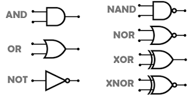

Compuertas Lógicas
Las compuertas lógicas son dispositivos electrónicos que realizan operaciones lógicas sobre una o más señales de entrada para producir una salida única. Estas compuertas son los bloques de construcción básicos de los circuitos digitales, y se utilizan ampliamente en la creación de sistemas electrónicos y computacionales.

Tipos de Compuertas Lógicas
Existen varios tipos de compuertas lógicas, cada una de las cuales realiza una función específica:
- **Compuerta NOT**: Esta compuerta invierte el valor de la entrada. Si la entrada es 1, la salida será 0, y viceversa.
- **Compuerta AND**: Solo genera una salida de 1 si todas sus entradas son 1. En cualquier otro caso, la salida será 0.
- **Compuerta OR**: Produce una salida de 1 si al menos una de sus entradas es 1. Si todas las entradas son 0, la salida será 0.
- **Compuerta XOR**: Genera una salida de 1 solo cuando las entradas son diferentes. Si ambas entradas son iguales, la salida será 0.
- **Compuerta NAND**: Funciona como una AND, pero con la salida invertida. La salida es 1 excepto cuando todas las entradas son 1.
- **Compuerta NOR**: Es la inversa de la compuerta OR, y genera una salida de 0 si alguna de las entradas es 1.
- **Compuerta XNOR**: Produce una salida de 1 solo si las entradas son iguales. Si son diferentes, la salida será 0.
Aplicaciones Prácticas
Las compuertas lógicas son fundamentales para el diseño de circuitos integrados y microprocesadores. A través de la combinación de diferentes tipos de compuertas, es posible construir circuitos complejos que pueden realizar tareas sofisticadas, como la ejecución de programas de software o el procesamiento de datos en tiempo real. Además, son esenciales para el desarrollo de memorias digitales, dispositivos de control automático, y sistemas de telecomunicaciones.